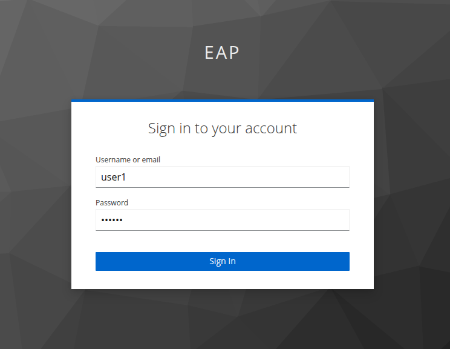

Lab 4: Deploying the Migrated App on JBoss EAP 8
In this lab, you apply the changes to migrate the Coolstore application to Jakarta EE. You rebuild the container image using JBoss EAP 8, deploy it on OpenShift, and validate that the modernized application functions as expected.
This step completes the migration journey, demonstrating how a legacy enterprise Java application can be successfully transformed and redeployed on a modern, supported runtime—without disrupting the underlying container platform.
Instructions
-
Prepare and Build the Migrated Application
-
For the purpose of this lab, you may clone the pre-migrated version of the application, which already includes the required changes to migrate from the javax namespace to the Jakarta EE libraries. This repository is provided to streamline the lab experience and allow you to focus on deployment and validation.
git clone https://github.com/opentraining-labs-customizations/getting-started-migrated.git cd getting-started-migrated -
Navigate to the directory containing the cloned source code.
cd getting-started-migrated -
Update the Keycloak configuration to match your Red Hat OpenShift environment. Edit the following file and replace the placeholder <GUID> with your OpenShift cluster identifier.
vi coolstore/src/main/webapp/keycloak.json { "realm": "eap", "auth-server-url": "https://keycloak-coolstore-eap8.apps.cluster-<GUID>.dynamic.redhatworkshops.io/", "ssl-required": "external", "resource": "eap-app", "public-client": true, "confidential-port": 0 } -
Build the application using Maven so that the updated configuration is included in the deployable artifact.
mvn clean package -pl coolstore -am -
Verify that the application archive has been successfully generated.
ls coolstore/target/ROOT.war
-
-
Deploy the updated Coolstore Application on OpenShift (JBoss EAP 8)
-
Navigate to the repository that contains the OpenShift resources and deployment configuration for JBoss EAP 8 and copy the newly built application WAR file into the deployment repository.
cd mta-dev-lightspeed ls eap7_coolstore eap8_coolstore cp getting-started-migrated/coolstore/target/ROOT.war eap8_coolstore/00-eap8-coolstore-image -
Navigate to the image build directory and create the required BuildConfig and ImageStream for JBoss EAP 8.
cd eap8_coolstore/00-eap8-coolstore-image oc create -f 00-bc-is.yaml namespace/coolstore-eap8 created buildconfig.build.openshift.io/coolstore-eap81 created imagestream.image.openshift.io/coolstore-eap81 createdVerify that the resources have been created successfully.
oc project coolstore-eap8 Now using project "coolstore-eap8" on server "https://api.cluster-6f2l2.dynamic.redhatworkshops.io:6443". oc get bc NAME TYPE FROM LATEST coolstore-eap81 Docker Binary 0 oc get is NAME IMAGE REPOSITORY TAGS UPDATED coolstore-eap81 image-registry.openshift-image-registry.svc:5000/coolstore-eap8/coolstore-eap81 -
Start a binary build using the copied application artifact.
oc start-build coolstore-eap81 --from-dir=. --follow -
Navigate back to the main deployment directory and deploy the PostgreSQL database along with its service.
cd mta-dev-lightspeed/eap8_coolstore oc create -f 01-postgresql-deploy-svc.yaml deployment.apps/postgres created service/postgres created -
Verify that the database deployment and service are running.
oc get deployment NAME READY UP-TO-DATE AVAILABLE AGE postgres 1/1 1 1 2m21s oc get svc NAME TYPE CLUSTER-IP EXTERNAL-IP PORT(S) AGE postgres ClusterIP 172.31.185.74 <none> 5432/TCP 2m32s
-
-
Configure and Deploy Keycloak
-
Create a ConfigMap containing the Keycloak realm configuration.
oc create configmap keycloak-realm --from-file=realm-export.json configmap/keycloak-realm created oc get configmap keycloak-realm NAME DATA AGE keycloak-realm 1 20s -
Edit the Keycloak deployment file and replace <GUID> with your OpenShift cluster identifier.
vi 02-keyclaok-deploy-svc-route.yaml ... - name: KC_PROXY value: edge - name: KC_HOSTNAME value: keycloak-coolstore-eap8.apps.cluster-<GUID>.dynamic.redhatworkshops.io - name: KC_HOSTNAME_STRICT value: "false" - name: KC_HTTP_ENABLED value: "true" ... -
Deploy Keycloak and confirm that all associated resources are created successfully.
oc create -f 02-keyclaok-deploy-svc-route.yaml imagestream.image.openshift.io/keycloak-rhbk created deployment.apps/keycloak created service/keycloak created route.route.openshift.io/keycloak created job.batch/keycloak-bootstrap created oc get deployment/keycloak NAME READY UP-TO-DATE AVAILABLE AGE keycloak 1/1 1 1 31s oc get svc/keycloak NAME TYPE CLUSTER-IP EXTERNAL-IP PORT(S) AGE keycloak ClusterIP 172.31.102.14 <none> 8080/TCP 42s oc get route/keycloak NAME HOST/PORT PATH SERVICES PORT TERMINATION WILDCARD keycloak keycloak-coolstore-eap8.apps.cluster-6f2l2.dynamic.redhatworkshops.io keycloak http edge/Redirect None -
Create a job to provision a default Keycloak user (user1 / redhat) required by the application.
oc create -f 03-keycloak-job.yaml job.batch/keycloak-bootstrap created oc get jobs NAME STATUS COMPLETIONS DURATION AGE keycloak-bootstrap Complete 1/1 9s 17s
-
-
Deploy the Coolstore Application
-
Deploy the Coolstore application along with its service and route.
oc create -f 04-coolstore.yaml deployment.apps/coolstore created service/coolstore created route.route.openshift.io/coolstore created -
Verify that the application has been deployed successfully and is accessible.
oc get deployment/coolstore NAME READY UP-TO-DATE AVAILABLE AGE coolstore 1/1 1 1 77s oc get svc/coolstore NAME TYPE CLUSTER-IP EXTERNAL-IP PORT(S) AGE coolstore ClusterIP 172.31.133.182 <none> 8080/TCP 89s *oc get route/coolstore NAME HOST/PORT PATH SERVICES PORT TERMINATION WILDCARD coolstore coolstore-coolstore-eap8.apps.cluster-6f2l2.dynamic.redhatworkshops.io coolstore 8080 edge None -
Access the application route URL to verify that the legacy application has been successfully deployed and is running.

-
Validate the Keycloak integration by clicking the Sign In button on the application landing page.

-
Log in using the credentials username: user1 and password: redhat, and confirm that authentication succeeds and the application is redirected to the main application interface.
Voilà! You have successfully migrated the JBoss EAP 7 application from the legacy javax-based codebase to a JBoss EAP 8 application using the Jakarta EE platform.
-